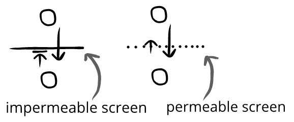

Evaluatory Screens
To think about spectator entertainment, we can use emotion networks:
Rosie and her friends examine the creepy old house.

We can add observers of this emotion network:
Trevor and Yasmin are watching Squeal II (←Trevor and Yasmin observe an emotion network)
Rosie and her friends examine the creepy old house.

When Trevor and Yasmin watch Squeal II, they can recieve evaluatory information from the characters, but the characters can't from them.
Trevor and Yasmin are watching Squeal II
Rosie and her friends examine the creepy old house.
Rosie gets a fright, but it's just a broom falling over. She laughs. (←Trevor and Yasmin can read her evaluatory information)
She wanders over to a dusty jewelry box.
Trevor: *frustrated* "Don't open it!" (←Rosie can't read Trevor's evaluatory information)

Above, while Trevor gets evaluatory information from Rosie, Rosie can't get evaluatory information from him.
A movie has an impermeable screen—evaluatory information is completely filtered out. But something like a play has a permeable screen:

Which is why shouting at actors in a movie has a different result than shouting at actors in a play.
Consider:
Spectator entertainment with permeable screens (in-person performances) often gives us the feeling of including us, which makes them feel vivid and interesting. Things with permeable screens feel dynamic, and allow for reactive participation.
By contrast, spectator entertainment with impermeable screens (remotely viewed or a static medium) often has the feeling of excluding us, which makes them feel lifeless or grating outside of specific circumstances.
Screens. We can see all kinds of evaluatory screens:
- A play has a pretend screen, where the actors recieve evaluatory information but mostly carries on as if they aren't there
- A movie has as absolute screen, where the characters will never recieve evaluatory information
- A window is a barrier screen, where evaluatory information could be let out by opening it
- An athletic game has a concentration screen, where participants need so much focus that they can't focus on the audience
(and so on)
An evaluatory screen doesn't mean something is spectator entertainment. Something is only spectator entertainment when the priority is on one group—which may or may not have a screen.
If a salesman flatters us, there's no screen but since the priority is us it's spectator entertainment. Similarly, if we watch streetlife from our window, there's an evaluatory screen but since the priority isn't us it's not spectator entertainment.